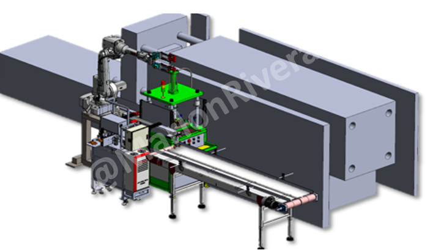

← Back to projects
Robotics & Line Integration • Cambodia • 2020
Fully Automated Diecasting Production Line
Integrated robots, transfer systems, trimming, deburring and production monitoring into one coordinated manufacturing line.
ABB RobotLCPL RobotPLC / HMIServo MotionSolidWorksOEE Monitoring
3D Design

Actual Machine Video
Responsibilities
Line planning, concept development, mechanical design, PLC programming, robot integration, transfer design and project leadership.
What needed to be solved
Synchronize multiple processes while maintaining safe operation, stable flow, equipment communication and future scalability.
Engineering approach
Developed centralized machine coordination with robot handling, automated transfer and real-time production monitoring.
Key outcomes
- Reduced manual handling
- Improved process synchronization
- Improved production visibility
- Enabled Smart Manufacturing expansion